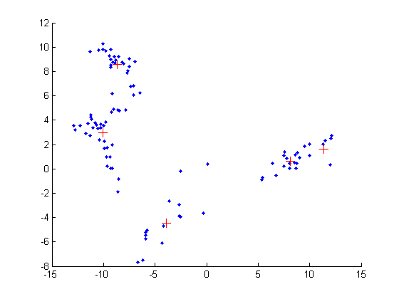

Simple test of mixGaussMissingFitEM
setSeed(1);
nmix = 5;
d = 2;
model.mu = 10*randn(d, nmix);
Sigma = zeros(d, d, nmix);
for c=1:nmix
Sigma(:,:,c) = randpd(d) + 0.1*eye(d);
end
model.Sigma = Sigma;
model.mixweight = normalize(rand(1, nmix) + ones(1, nmix));
nsamples = 100;
X = mixGaussSample(model.mu, model.Sigma, model.mixweight, nsamples);
Xmissing = X;
Xmissing(1:7:end) = NaN;
model = mixGaussMissingFitEm(Xmissing, nmix, 'doMap', true, 'verbose', true);
figure; hold on;
plot(X(:, 1), X(:, 2), '.');
for i=1:nmix
plot(model.mu(1, i), model.mu(2, i), '+', 'markersize', 10, 'color', 'r')
end
modelNotMissing = mixModelFit(X, nmix, 'gauss');
1 loglik: -561.235
2 loglik: -537.197
3 loglik: -533.383
4 loglik: -533.012
5 loglik: -532.959
